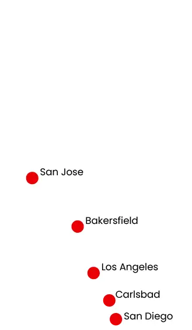
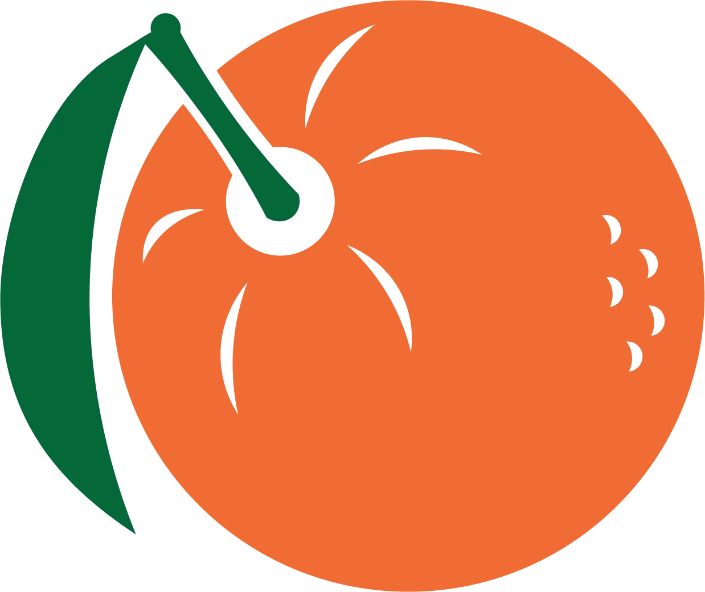

Our Origin
Bountiful Foods started as an idea within the Santiago family, based around their desire to see better food for their family and their friends living nearby.
Having a large farm that supplies a majority of fruits and vegetables in the greater Carlsbad area, the Santiago's wanted to see their fresh food land on everyone's tables.
With support from local businesses and friends, Bountiful Foods has expanded from one farm to five farms in the Southern California region, bringing new foodtrucks that deliver produce and make to-order drinks!
Where Are We?
- San Jose
- Bakersfield
- Los Angeles
- Carlsbad
- San Diego
- TBD!
Join Our Cause
We hope our message has inspired you today-- if you'd like to join the cause of bringing healthier food to everyone, please use the email or phone number listed below to inquire about what opportunities you can participate in.
- info@bountifulfoods.com
- (708)645-2919